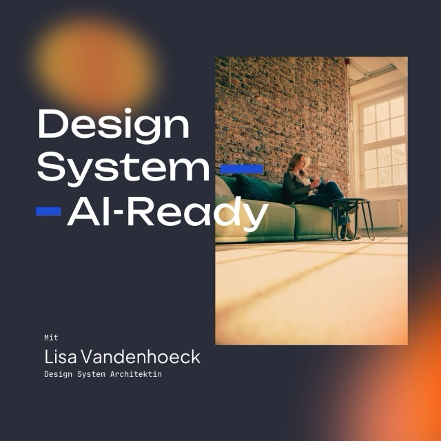
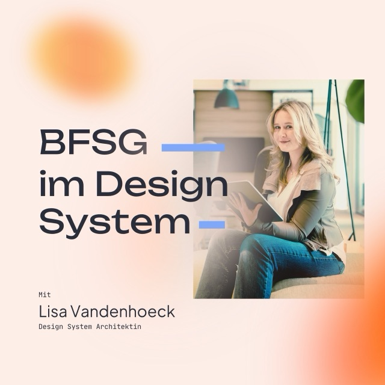

Ich mache eine Sache: Designsystem-Klarheit. Ein Deep-Dive, an eurem eigenen System. Damit euer System wieder die Tools beherrscht und nicht umgekehrt.
Jetzt Kennenlern-Gespräch buchenIhr wisst sofort, ob ein neues Feature für euer System relevant ist – oder ob ihr es getrost ignorieren könnt.
Components laufen nicht schon nach einer Woche in den nächsten Engpass, weil der Weg zur Skalierung von Anfang an mitgedacht ist.
Ihr versteht die großen Trends, ohne jedem hinterherzulaufen, und wisst, welcher Teil davon euch wirklich betrifft.
Prozess durch einen Deepdive-Booster beschleunigen.
Jetzt Kennenlern-Gespräch buchenKI skaliert, leider auch Fehler und Designschulden. So ist die Anwendung von KI und neuen Features schnell ein Multiplikator für Chaos.
Das UI läuft regelmäßig in Kontrastprobleme rein.
Die Bibliothek wächst schneller, als sie gepflegt wird.
Aufräumen traut sich niemand mehr.
Wenn sich die Themen, „die man sich mal anschauen muss", schneller stapeln, als das Tagesgeschäft Platz dafür lässt, braucht es aktiv den Raum dafür.
Die meisten Teams wollen kein weiteres AI-Feature. Sie wollen Klarheit – ein System, das mit den Tools mithält, nicht hinterherhinkt. So sieht das aus:
Jedes Team hat eins. Meins ist zufällig, genau das aufzulösen.
Figma bringt laufend neue Config-Features – Code Layers, Agents, Animations. Nicht alles davon ist für euer Setup relevant. In drei Stunden sortieren wir gemeinsam, was ihr wirklich nutzen solltet.

In drei Stunden erarbeiten wir, was es braucht, damit KI-Tools euer Design System konsistent verstehen und wiederverwenden können, statt zu raten.
Als Nebeneffekt: Auch die Zusammenarbeit mit euren Dev-Teams wird dadurch spürbar einfacher.

BFSG-Anforderungen lassen sich nicht pro Projekt neu abhaken. In drei Stunden bauen wir Kontrast, ARIA und Focus so ins Design System ein, dass jede neue Component automatisch barrierefrei startet.